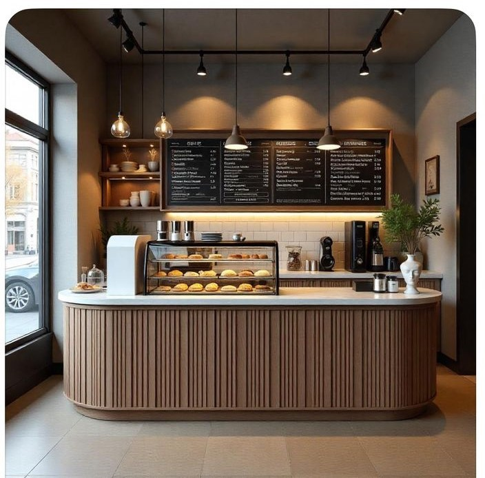

Welcome to the Baking Recipes Collection
This website is a curated collection of baking recipes designed to inspire both beginners and experienced bakers. From soft and fluffy cakes to crunchy cookies, from wholesome bread to decadent brownies, there is something here for everyone. Each recipe is explained in simple steps so you can follow along easily, even if this is your first time baking.
The goal of this project is not only to share delicious treats but also to show the joy that comes from baking. Whether you are preparing cupcakes for a birthday, pies for a holiday gathering, or muffins for a quick breakfast, these recipes will guide you through the process. Baking is more than just food; it’s a way to create memories, bring smiles, and enjoy time with loved ones. Browse through the recipes and start your baking journey today!